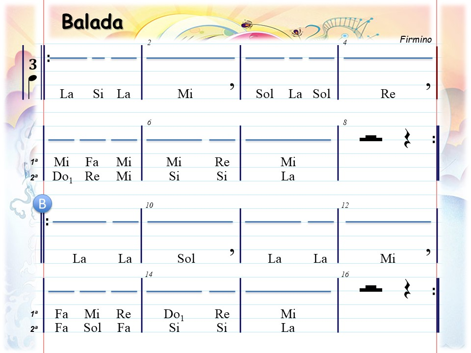
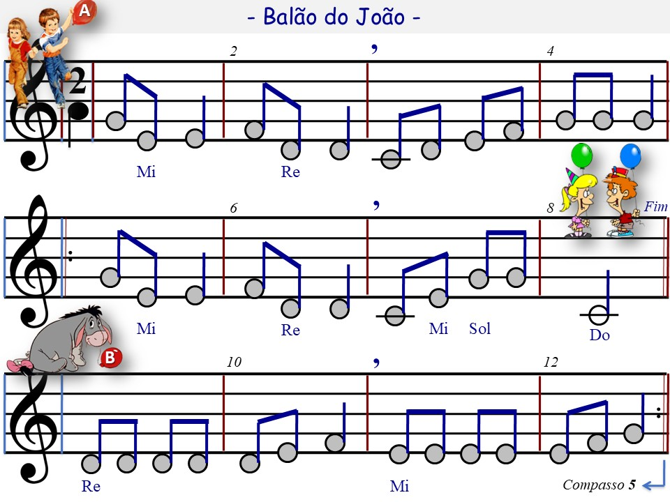
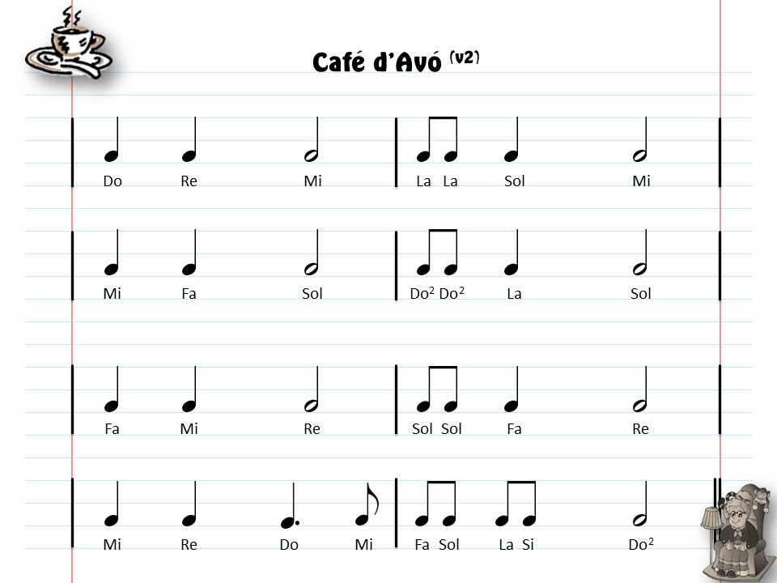
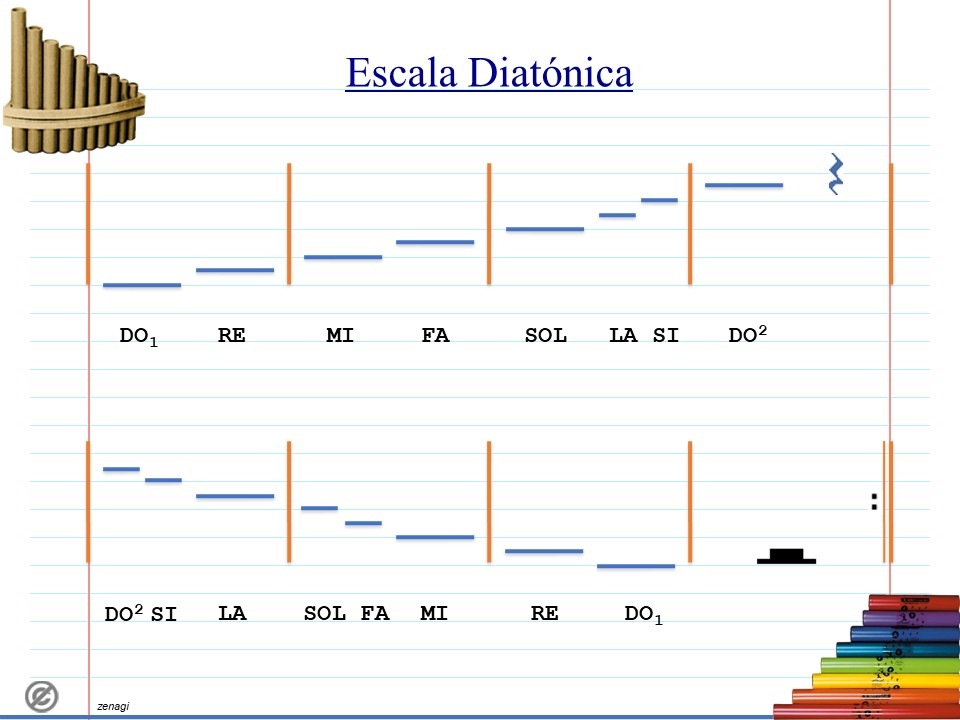
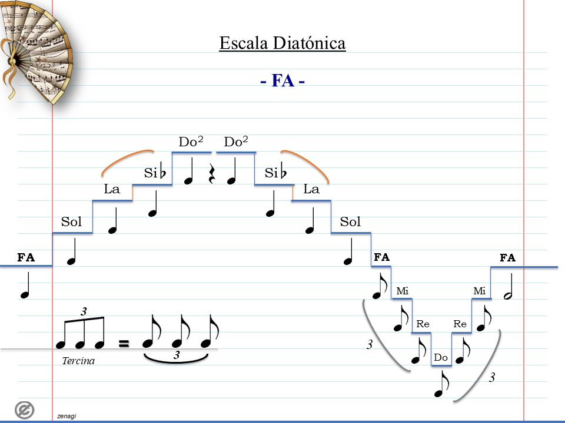
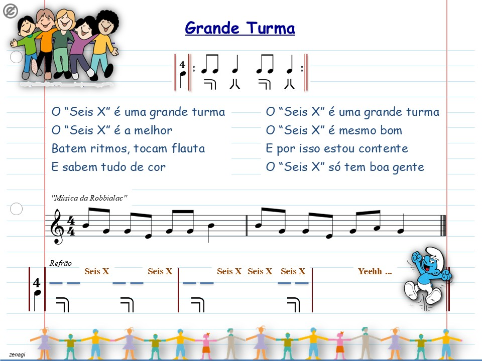
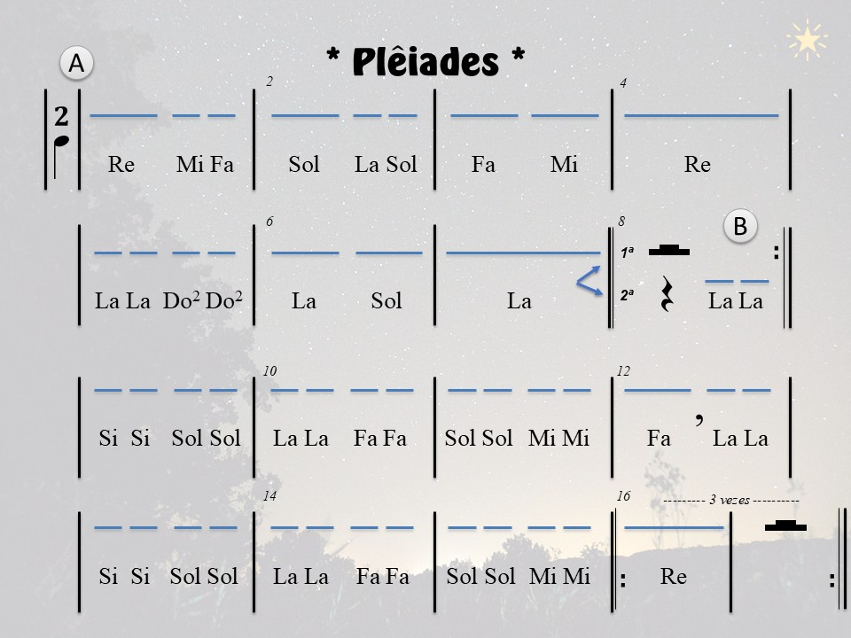
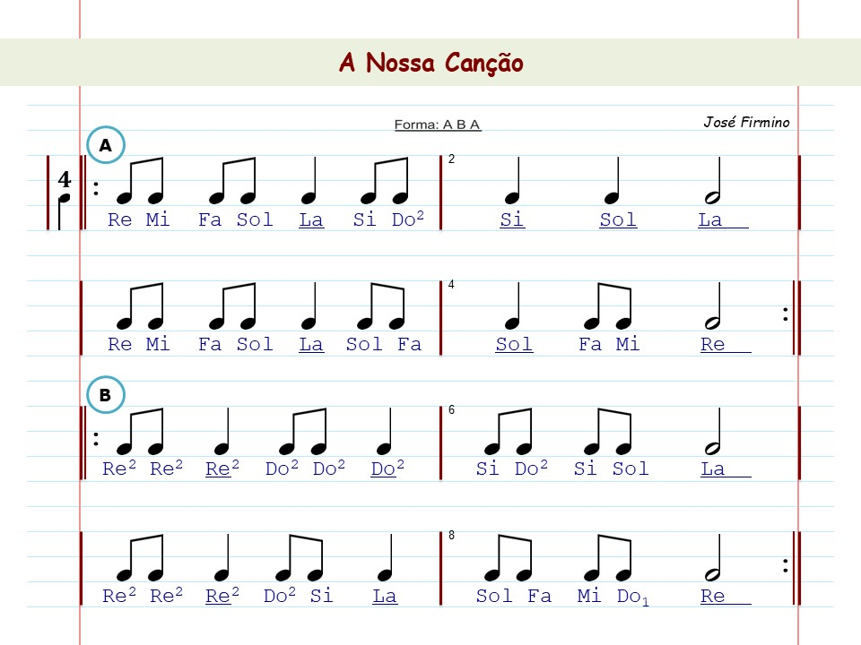
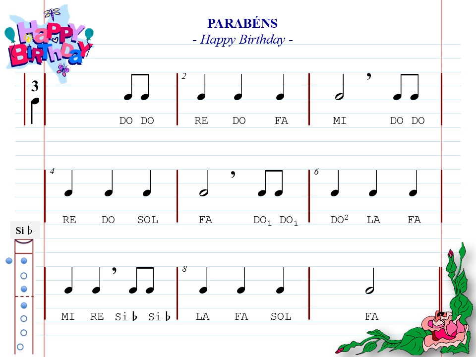
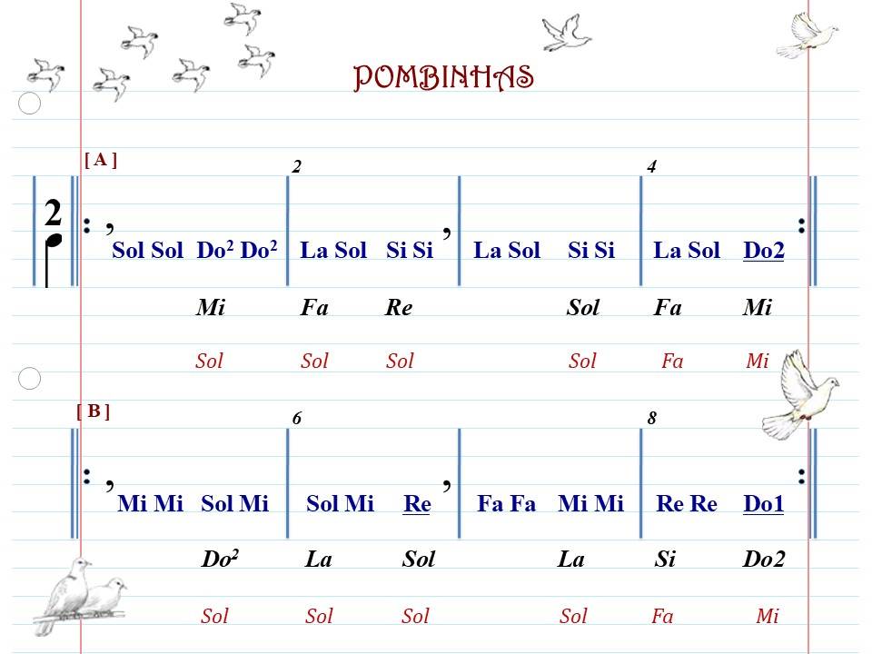

Arranjos
Acompanhamento para músicas conhecidas
Adeus

Alecrim

V1, 1989
V2, 1989
Autour d'une Table - Firmino

1990
Balada - Firmino
1990


Balão do João
2006


Bon Anniversaire

1991
Café d’Avó
1998


V2


V3


Carrickfergus
2006

Escala




Fui Prá Escola
António M. Carvalho

Gatito
1987

Grande Turma
Leitura dum poema sobre um ostinato rítmico
1 - O professor canta as duas primeiras frases em simultâneo com o ostinato. Os alunos repetem.
2 - O professor canta as duas frases seguintes. Os alunos repetem.
3 - Acrescentar o refrão no final de cada estrofe.


Jingle Bells

1988
Mack the Knife - Kurt Weill
1989

Mary Had a Little Lamb
2006


Noite Feliz & Estrelinha & Jingle Bells


Nossa Canção (v1) - Firmino
v1, 1988


v2, 1989

Parabéns / Happy Birthday
1989


Pombinhas
2006


Samba Lelé
1989